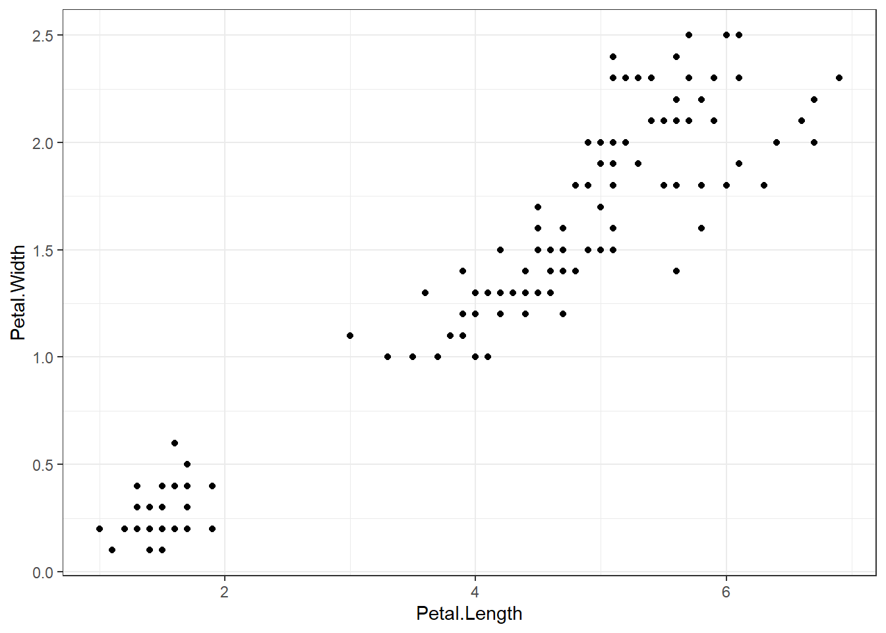
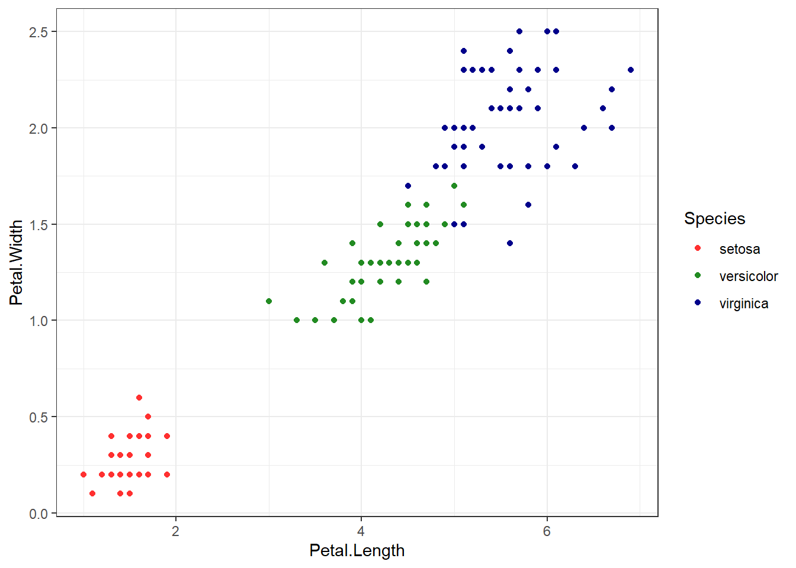

Unsupervised learning is a class of machine learning algorithms to identify patterns or grouping structure in the data. Unlike supervised learning which relies on “supervised” information such as the dependent variable to guide modeling, unsupervised learning seeks to explore the structure and possible groupings of unlabeled data. This information will be useful to provide pre-processor for supervised learning.
Unsupervised learning has no explicit dependent variable of Y for prediction. Instead, the goal is to discover interesting patterns about the measurements on \((X_{1}), (X_{2}), . . . , (X_{p})\) and identify any subgroups among the observations.
Generally, in this section, the two general methods are introduced: Principal components analysis and Clustering.
Principal Component Analysis (PCA)
Principal Components Analysis (PCA) produces a low-dimensional representation of a dataset. It finds a sequence of linear combinations of the variables that have maximal variance, and are mutually uncorrelated.
The first principal component of a set of features \((X_1, X_2, . . . , X_p)\) is the normalized linear combination of the features: \[ Z_1 = \phi_{11}X_1 +\phi_{21}X_2 +...+\phi_{p1}X_p \]
that has the largest variance. By normalized, we mean that \(\sum_{j=1}^p\phi_{j1}^2 = 1\).
The elements \((\phi_{11}, . . . , \phi_{p1})\) are the loadings of the first principal component; together, the loadings make up the principal component loading vector, \(\phi_1= (\phi_{11} \phi_{21} ... \phi_{p1})^T\)
We constrain the loadings so that their sum of squares is equal to one, since otherwise setting these elements to be arbitrarily large in absolute value could result in an arbitrarily large variance.
Clustering
K-Means Clustering
The K-means clustering method is to partition the data points into k groups such that the sum of squares from points to the assigned cluster center in each group is minimized.
Hierarchical Clustering
Hierarchical clustering is an alternative approach which does not require a pre-specified or a particular choice of \((K)\).
Hierarchical Clustering has an advantage that it produces a tree-based representation of the observations: Dendrogram
A dendrogram is built starting from the leaves and combining clusters up to the trunk. The result of hierarchical clustering is a tree-based representation of the objects, which is also known as dendrogram. Observations can be subdivided into groups by cutting the dendrogram at a desired similarity level.
Hands-on workshop: Principal Component Analysis and Clustering methods
1. Principal Component Analysis (PCA)
## Gentle Machine Learning## Principal Component Analysis# Dataset: USArrests is the sample dataset used in # McNeil, D. R. (1977) Interactive Data Analysis. New York: Wiley.# Murder numeric Murder arrests (per 100,000)# Assault numeric Assault arrests (per 100,000)# UrbanPop numeric Percent urban population# Rape numeric Rape arrests (per 100,000)# For each of the fifty states in the United States, the dataset contains the number # of arrests per 100,000 residents for each of three crimes: Assault, Murder, and Rape. # UrbanPop is the percent of the population in each state living in urban areas.library(datasets)library(ISLR)arrest = USArrestsstates=row.names(USArrests)names(USArrests)
[1] "Murder" "Assault" "UrbanPop" "Rape"
# Get means and variances of variablesapply(USArrests, 2, mean)
## Iris example# Without grouping by speciesggplot(iris, aes(Petal.Length, Petal.Width)) +geom_point() +theme_bw() +scale_color_manual(values=c("firebrick1","forestgreen","darkblue"))

# With grouping by speciesggplot(iris, aes(Petal.Length, Petal.Width, color = Species)) +geom_point() +theme_bw() +scale_color_manual(values=c("firebrick1","forestgreen","darkblue"))

# Check k-means clusters## Starting with three clusters and 20 initial configurationsset.seed(20)irisCluster <-kmeans(iris[, 3:4], 3, nstart =20)irisCluster
## Wine example# The wine dataset contains the results of a chemical analysis of wines # grown in a specific area of Italy. Three types of wine are represented in the # 178 samples, with the results of 13 chemical analyses recorded for each sample. # Variables used in this example:# Alcohol# Malic: Malic acid# Ash# Source: http://archive.ics.uci.edu/ml/datasets/Wine# Import wine datasetlibrary(readr)wine <-read_csv("https://raw.githubusercontent.com/datageneration/gentlemachinelearning/master/data/wine.csv")## Choose and scale variableswine_subset <-scale(wine[ , c(2:4)])## Create cluster using k-means, k = 3, with 25 initial configurationswine_cluster <-kmeans(wine_subset, centers =3,iter.max =10,nstart =25)wine_cluster
# Create a function to compute and plot total within-cluster sum of square (within-ness)wssplot <-function(data, nc=15, seed=1234){ wss <- (nrow(data)-1)*sum(apply(data,2,var))for (i in2:nc){set.seed(seed) wss[i] <-sum(kmeans(data, centers=i)$withinss)}plot(1:nc, wss, type="b", xlab="Number of Clusters",ylab="Within groups sum of squares")}# plotting values for each cluster starting from 1 to 9wssplot(wine_subset, nc =9)